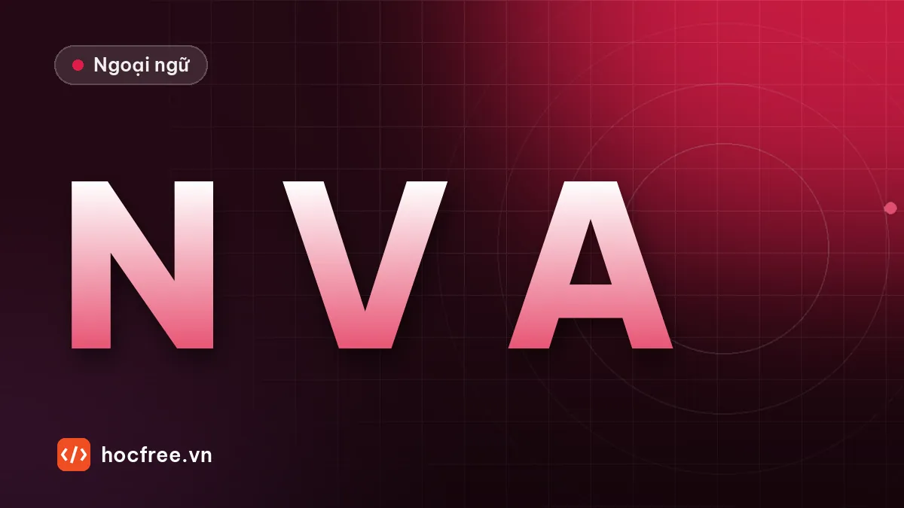

Từ loại và vị trí trong câu: chìa khóa câu Part 5
Vị trí của danh từ, động từ, tính từ, trạng từ trong câu, quy trình nhìn hai bên ô trống để chọn từ loại và 15 câu luyện có giải thích.

Học xong bài này, bạn sẽ
- Biết vị trí điển hình của danh, động, tính, trạng từ
- Giải câu chọn từ loại bằng cách nhìn hai bên ô trống
- Tránh bẫy trạng từ chen giữa trợ động từ và động từ
Nên học trước: Cấu trúc câu: chủ ngữ, động từ, tân ngữ, bổ ngữ
Nội dung bài viết
Trong Part 5, nhóm câu chọn từ loại xuất hiện rất đều. Bốn đáp án là cùng một gốc từ: success, succeed, successful, successfully. Đây là nhóm câu dễ lấy điểm nhất, vì bạn không cần hiểu nghĩa cả câu, chỉ cần nhìn hai bên ô trống. Bài này dạy vị trí của bốn từ loại chính và quy trình giải trong 10–15 giây.
Bốn từ loại và vị trí điển hình
Danh từ (Noun)
- Làm chủ ngữ: Production increased by 10%.
- Sau mạo từ, từ hạn định: a / an / the / this / each / some / our + N.
- Sau tính từ: a significant increase.
- Sau giới từ: in addition, for approval, without permission.
- Sau ngoại động từ (làm tân ngữ): We need your signature.
- Sau sở hữu cách: the company's expansion.
Động từ (Verb)
- Sau chủ ngữ, khi câu chưa có động từ chia: The committee recommends a new policy.
- Sau động từ khuyết thiếu: will / can / should / must + V nguyên mẫu.
- Sau to chỉ mục đích: to reduce costs.
- Đầu câu mệnh lệnh: Please submit the form.
Tính từ (Adjective)
- Trước danh từ: a competitive price.
- Sau động từ nối (be, become, remain, seem…): The new design is attractive.
- Sau make / keep / find + tân ngữ: keep the area clean.
Trạng từ (Adverb)
- Bổ nghĩa động từ: The team worked efficiently.
- Bổ nghĩa tính từ: an extremely busy week.
- Giữa trợ động từ và động từ chính: has recently been promoted, will soon announce.
- Giữa be và V3 / V-ing: is currently being reviewed.
- Đầu câu, trước dấu phẩy: Unfortunately, the flight was canceled.
Quy trình giải 4 bước
- Nhìn đáp án: 4 từ cùng gốc → câu từ loại.
- Nhìn từ đứng trước ô trống: mạo từ, tính từ sở hữu → cần danh từ (hoặc tính từ + danh từ). be → tính từ, V-ing, V3. Trợ động từ has / will → động từ hoặc trạng từ.
- Nhìn từ đứng sau: danh từ → ô trống thường là tính từ. Dấu chấm hoặc giới từ → ô trống thường là danh từ hoặc trạng từ.
- Chọn, chỉ đọc nghĩa khi có hai đáp án cùng từ loại (ví dụ hai danh từ applicant / application).
Ví dụ có giải thích
Ms. Tran gave a ______ presentation on the new marketing strategy.
(A) persuade (B) persuasive (C) persuasively (D) persuasion
Xem đáp án
Đứng sau mạo từ a và trước danh từ presentation → tính từ: (B) persuasive.
The factory has ______ increased its output since the new line was installed.
(A) significant (B) significance (C) significantly (D) signify
Xem đáp án
Giữa trợ động từ has và động từ increased → trạng từ: (C) significantly.
Luyện tập 15 câu
Bấm giờ 5 phút. Tự làm hết rồi mới mở đáp án.
1. Please read the instructions ______ before using the machine. (A) careful (B) carefully (C) care (D) caring
2. The ______ of the new office will take about six months. (A) construct (B) constructive (C) construction (D) constructed
3. Our sales figures remain ______ despite the difficult market. (A) strong (B) strongly (C) strength (D) strengthen
4. The company plans to ______ its operations to Thailand. (A) expansion (B) expand (C) expansive (D) expansively
5. Mr. Lee is ______ responsible for training new staff. (A) primary (B) primarily (C) prime (D) primacy
6. We received many ______ for the accountant position. (A) apply (B) applicants (C) applicable (D) applications
7. The meeting was postponed because of an ______ problem with the projector. (A) expect (B) unexpected (C) unexpectedly (D) expectation
8. All visitors must show ______ identification at the gate. (A) valid (B) validity (C) validate (D) validly
9. The new software allows users to work more ______. (A) productive (B) productively (C) production (D) product
10. Thank you for your ______ in our products. (A) interest (B) interested (C) interesting (D) interestingly
11. The supplier ______ delivers the materials on time. (A) consistent (B) consistency (C) consistently (D) consist
12. Ms. Park was praised for her ______ to the project. (A) contribute (B) contributed (C) contributor (D) contribution
13. The price of raw materials has become ______ high this year. (A) unusual (B) unusually (C) usual (D) usage
14. Employees are encouraged to make ______ about the work environment. (A) suggest (B) suggestive (C) suggestions (D) suggested
15. The inspection team found the equipment ______ for use. (A) safe (B) safely (C) safety (D) save
Xem đáp án và giải thích
- B – câu đã đủ (read the instructions), cần trạng từ bổ nghĩa động từ.
- C – sau The, trước of → danh từ.
- A – remain là động từ nối → tính từ.
- B – sau to chỉ mục đích → động từ nguyên mẫu.
- B – giữa is và tính từ responsible → trạng từ bổ nghĩa tính từ.
- D – sau many cần danh từ số nhiều. applicants (người nộp) và applications (đơn) đều là danh từ, nhưng "received many ___ for the position" thường nói về hồ sơ: nhận được nhiều đơn. Đây là kiểu câu phải đọc nghĩa khi có hai danh từ.
- B – sau mạo từ an, trước danh từ problem → tính từ (an cũng gợi ý từ bắt đầu bằng nguyên âm).
- A – trước danh từ identification → tính từ.
- B – more + trạng từ bổ nghĩa work.
- A – sau tính từ sở hữu your, trước in → danh từ: interest in.
- C – giữa chủ ngữ và động từ chia → trạng từ.
- D – sau her, trước to → danh từ chỉ sự việc: contribution to. contributor là người, không hợp nghĩa.
- B – bổ nghĩa tính từ high → trạng từ.
- C – sau make cần tân ngữ danh từ: make suggestions.
- A – find + tân ngữ + tính từ: thấy thiết bị an toàn.
Ghi các câu sai vào sổ lỗi với mã G. Nếu sai từ 4 câu trở lên, đọc lại phần vị trí của từ loại bạn hay nhầm nhất rồi làm lại sau 2 ngày. Bài tiếp theo, nhận diện từ loại qua hậu tố, giúp bạn biết đáp án nào là danh từ, tính từ hay trạng từ ngay cả khi chưa gặp từ đó bao giờ.